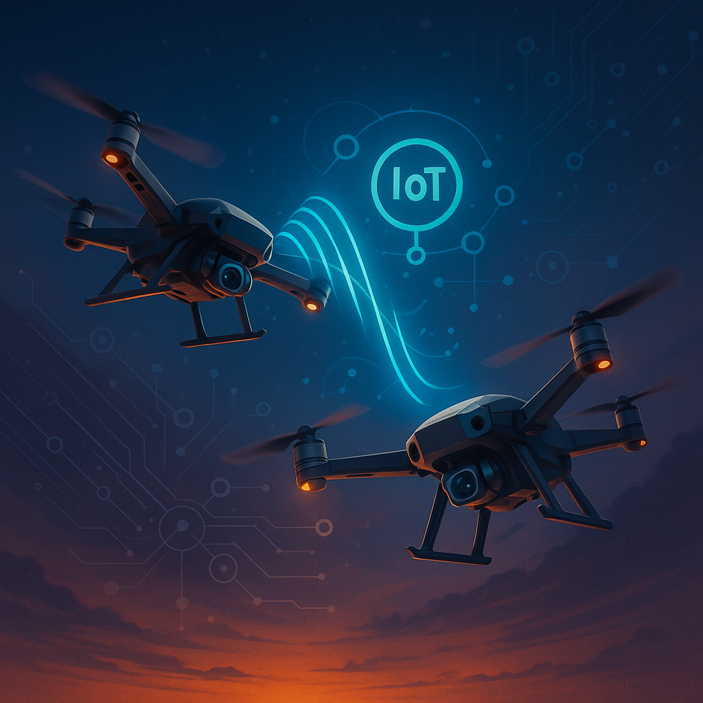
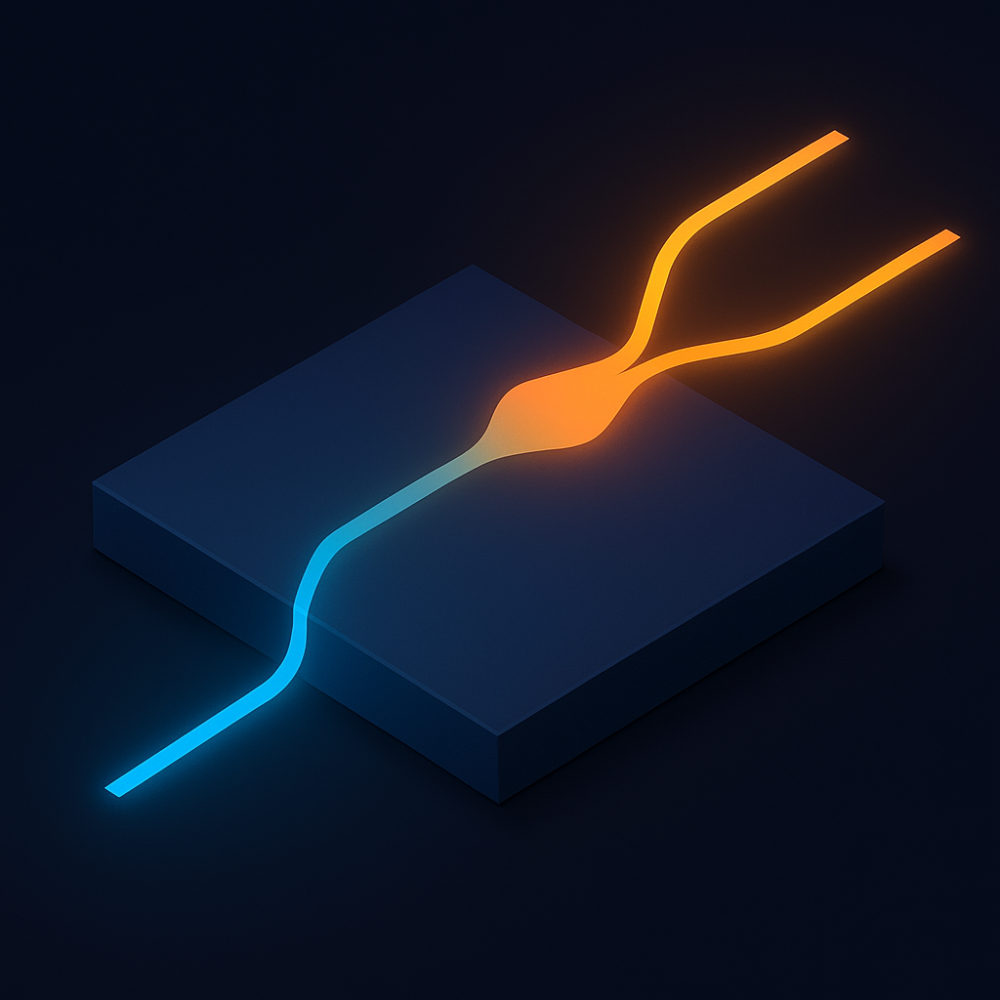
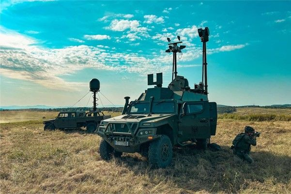

Perfil técnico
Sobre mí
Soy Ingeniero en Telecomunicaciones e Internet de las Cosas (IoT) con experiencia en el diseño y la optimización de sistemas de RF y comunicaciones inalámbricas. He desarrollado redes inteligentes abarcando desde la planificación de enlaces de RF y antenas hasta la implementación de protocolos IoT (LoRaWAN, NB‑IoT, MQTT) y la electrónica embebida. Mi enfoque combina la investigación aplicada en propagación de señales, filtrado y gestión del espectro con la creación de dispositivos conectados que garantizan alta fiabilidad y eficiencia energética. Me apasiona afrontar retos de integración hardware‑software, explorar nuevas tecnologías de radiofrecuencia y colaborar en proyectos multidisciplinares que impulsen la transformación digital.
Trabajo aplicado
Proyectos destacados
Tres líneas que resumen mi perfil: drones, radiofrecuencia, sistemas embebidos y comunicaciones de alto valor operativo.

UAV · ESP‑NOW · MAVLink
Comunicación Aire‑Aire de Drones IoT
Enlace autónomo entre drones con ESP32, telemetría en tiempo real, gateway y visualización web para seguimiento operativo.

Óptica · Simulación · Comunicaciones
Diseño de un Divisor de Potencia en Óptica Integrada (MMI)
Diseño y optimización de un acoplador multimodal MMI 1×2 para reparto eficiente de potencia en redes ópticas.

Defensa · SDR · Counter‑UAS
Sistema Antidron para Guerra Electrónica
Detección sectorial de amenazas aéreas mediante análisis RF y reporte a una plataforma C2 para mejorar la conciencia situacional.
Stack técnico
Tecnologías y áreas de trabajo
> scan --band 5.8GHz
[OK] espectro capturado
> classify --signal drone_rf
[OK] patrón compatible detectado
> publish --mqtt /c2/alerts
[OK] evento enviadoTrayectoria
Curriculum Vitae
Consulta el CV integrado en la web o ábrelo desde el navegador.